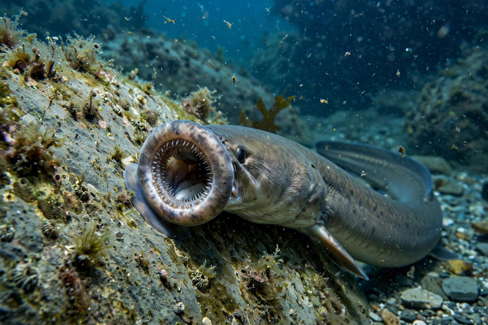

Agnatha
From Wikipedia, the free encyclopedia
| Agnatha (jawless fish) | |
|---|---|
| Kingdom | Animalia |
| Phylum | Chordata |
| Living groups | Lampreys, hagfish |
| Fossil record | Cambrian – present |
Agnatha (from Greek a-, "without", and gnathos, "jaw") is a traditional class or infraphylum of vertebrates comprising the jawless fish — the most primitive living vertebrates, lacking the hinged jaws of gnathostomes.

A sea lamprey, a living agnathanLiving representatives
Only two groups survive: the lampreys (order Petromyzontiformes, about 40 species) and the hagfish (class Myxini, about 75 species), collectively known as cyclostomes for their round, sucker-like mouths. Hagfish lack even a vertebral column in the strict sense, though they retain a cranium.
Characteristics
Agnathans retain a notochord throughout life, have cartilaginous skeletons, a single nostril, and gill pouches rather than true gill arches. Lampreys have a keratin-toothed oral disc used for feeding; hagfish secrete copious slime as a defence.
Evolution
Jawless vertebrates were diverse and abundant in the early Palaeozoic, including the armoured ostracoderms. Molecular evidence indicates that cyclostomes are monophyletic and are among the earliest-diverging lineages of living vertebrates.